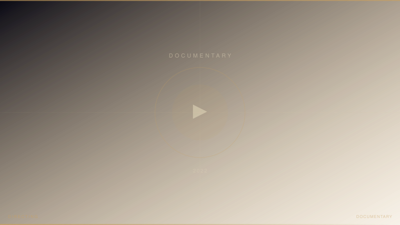

AKB48・横山由依さんがMV監督を務めた卒業曲「君がいなくなる12月」のメイキング映像。インタビュー・撮影・編集までをM.RYOHTA（森川亮太）が一貫して担当。lit.linkポートフォリオに掲載。YouTube公開済み。
担当：ビデオグラファー / エディター / インタビュアー
Sony FX3 / Leica SL2
- Videographer / Editor
- 森川亮太 (M.RYOHTA / @m_ichirinka)
- Artist
- 横山由依 (AKB48)
- MV Director
- 横山由依
YouTube: AKB48 横山由依卒業曲 MVメイキング / Instagram: @m_ichirinka (2022.07.14) ↗